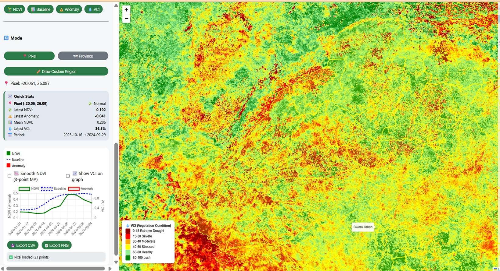
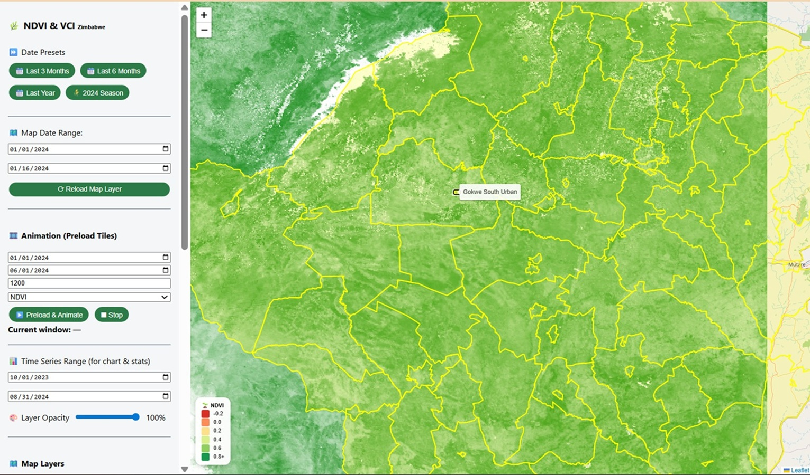
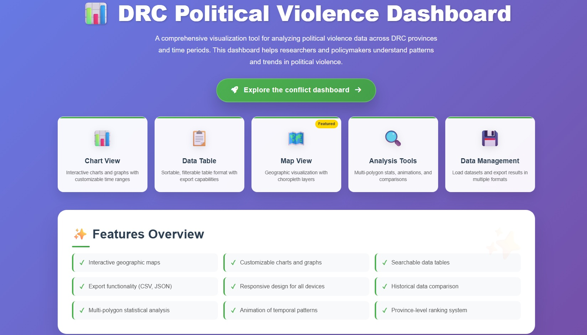
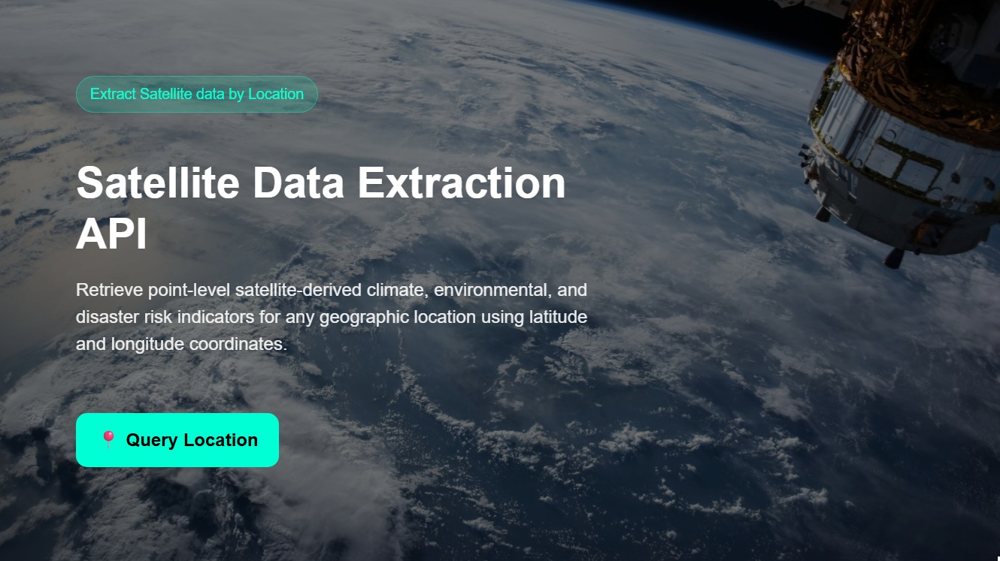

Profile
Engineering Earth Observation Systems for Climate Intelligence, Risk Monitoring & National Decision-Making
-
Full Name:
Farai Maxwell Marumbwa
-
Birth Date:
April 12, 1983
-
Current Position:
Geospatial data analyst consultant
-
Website:
https://github.com/maxmarumbwa
-
Email:
maxmarumbwa@gmail.com
Technical Skills
Earth Observation & Geospatial Intelligence
- Satellite data processing and analysis (MODIS, CHIRPS, ERA5, Landsat, Sentinel)
- Earth Observation systems for drought, flood, vegetation, climate monitoring, and humanitarian applications
- Machine learning for remote sensing classification and predictive modeling
- Google Earth Engine (advanced scripting, cloud geoprocessing, automation workflows)
- Python & R for automated GIS analysis
Full-Stack Geospatial Systems Development
- Backend & APIs: Django, Flask, FastAPI, Django REST Framework, Node.js
- Frontend geospatial applications: Leaflet, HTML, CSS, Bootstrap, Javascript, React
- Map Services: GeoServer (WMS/WFS), tiled rasters
- DevOps & Cloud: Git, GitHub, Docker
Data Engineering & ETL
- Geospatial ETL pipeline development (Python, GeoPandas, Pandas, SQL, R)
- Geospatial REST API development
- Geodatabase: PostgreSQL/PostGIS, MongoDB, MySQL
- Automation of analytics-ready datasets for web maps & decision-support systems
Portfolio
Featured Projects
{kind=link}

{kind=link}
{kind=link}
{kind=link}
{kind=link}
Global Resilience Hub Dashboard
Integrated Geospatial Monitoring for Climate, Environment and Disaster Resilience.
Launch App{kind=link}

{kind=link}
{kind=link}
{kind=link}
{kind=link}
{kind=link}
AgroClimate Intelligence Dashboard
Geospatial platform for climate risk and agriculture monitoring in Zimbabwe.
Launch App{kind=link}

{kind=link}
{kind=link}
{kind=link}
{kind=link}
{kind=link}
{kind=link}
Political Violence Dashboard
Full-stack analytics system for early warning and humanitarian planning.
Launch App
Satellite Raster Download API
REST API service for exporting Earth observation raster datasets including rainfall and NDVI GeoTIFFs.
Test API API Documentation{kind=link}

{kind=link}
Earth Observation Pixel Extraction API
Satellite-derived climate, environmental, and disaster risk intelligence for any geographic location.
Test API API DocumentationConsulting Services
Geospatial Intelligence & Earth Observation Solutions
I design and implement end-to-end geospatial intelligence systems that transform Earth observation data, climate information, and socio-economic datasets into operational decision-support platforms for governments, humanitarian agencies, and development partners.
Earth Observation & Climate Analytics
Development of satellite-based monitoring systems for drought, floods, vegetation health, and climate variability. I build automated pipelines using Google Earth Engine, Python, and R to generate operational indicators such as NDVI, SPI, rainfall anomalies, and agricultural stress metrics.
Early Warning & Risk Intelligence Systems
Design of multi-hazard early warning systems integrating geospatial thresholds, anomaly detection, and automated alerts. These systems support anticipatory action frameworks for droughts, floods, food insecurity, and conflict risk monitoring.
Geospatial Data Engineering & APIs
Architecture of scalable geospatial data infrastructures including ETL pipelines, spatial databases (PostGIS), and REST APIs (Django, Flask, FastAPI). I convert raw satellite and climate data into analysis-ready systems for real-time web applications and dashboards.
Decision Support & Geospatial Dashboards
Development of interactive GIS dashboards using Leaflet, GeoServer, and modern web frameworks. These systems enable real-time monitoring, spatial analysis, and visualization for humanitarian response, agriculture, and environmental management.
Climate & Environmental Impact Assessment
Spatial analysis of environmental change, land degradation, and climate impacts using remote sensing and geospatial modeling. I support vulnerability assessments, impact evaluation, and evidence generation for climate adaptation planning.
Humanitarian Data & Information Systems
Design of integrated humanitarian data platforms for NGOs and international organizations. Includes needs assessment systems, response monitoring dashboards, and interoperability frameworks aligned with global humanitarian standards (SPHERE, UN, SADC frameworks).
Contact
Let’s Work Together
Have a geospatial, climate or humanitarian data project? Send a message and I’ll respond shortly.